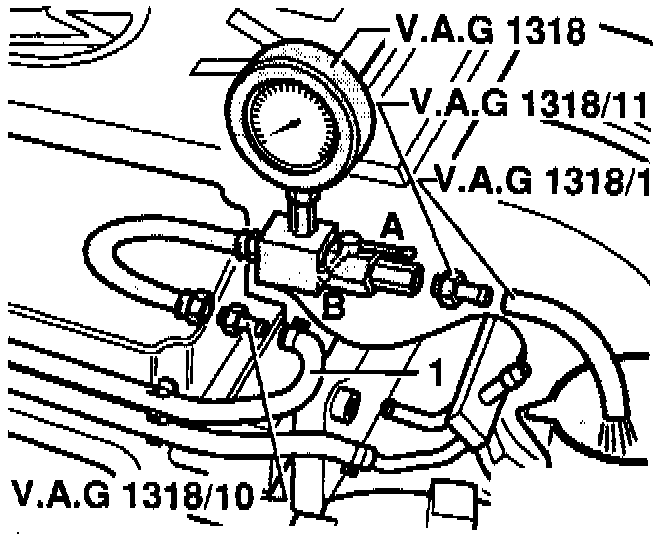
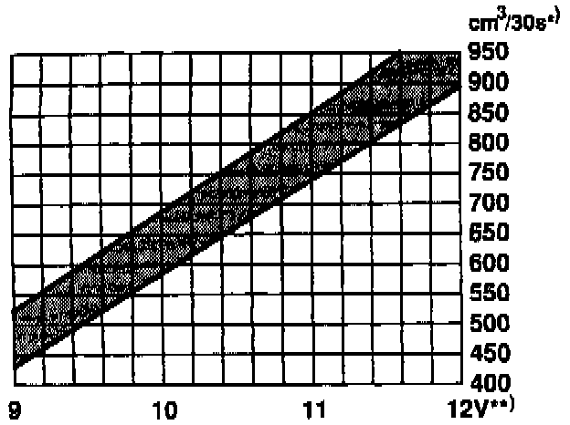

Checking Delivery Rate
NOTE: The test given below requires a fuel pressure gauge (0-100 psi) with a shutoff valve.CHECKING FUEL PUMP DELIVERY RATE
1. Remove the filler cap from the fuel tank.

2. Working in the engine compartment, disconnect the supply line from the fuel rail.
WARNING: Fuel will be expelled under pressure as the supply line is disconnected. Wrap a cloth around the line before disconnecting it. Do not smoke or work near heaters or other fire hazards. Keep a fire extinguisher handy.
3. Route the gauge output line into a measurement container of at least 1000 ml (1 qt.). Make sure the shutoff valve on the gauge is open.
4. Remove the fuel pump relay and run the fuel pump. Operating Pump For Testing
5. Slowly close off the shutoff valve until the gauge reaches 4.0 bar (58 psi). Shut the pump off and empty the container. Do not alter the position of the shutoff valve.

6. Operate the pump again for exactly 30 seconds. Compare the amount of fuel collected to the chart.
NOTE: Fuel pump output varies depending on the voltage at the pump. Always measure the voltage at the pump (with the pump running) before using the chart shown above. In general, pump voltage is 1-2 volts less than battery voltage.
7. If fuel delivery is below specifications, check for leaks, blocked or kinked lines, a blocked filter, or a blocked pump strainer/filter. If no faults are found, the fuel pump is probably severely worn or faulty and should be replaced.